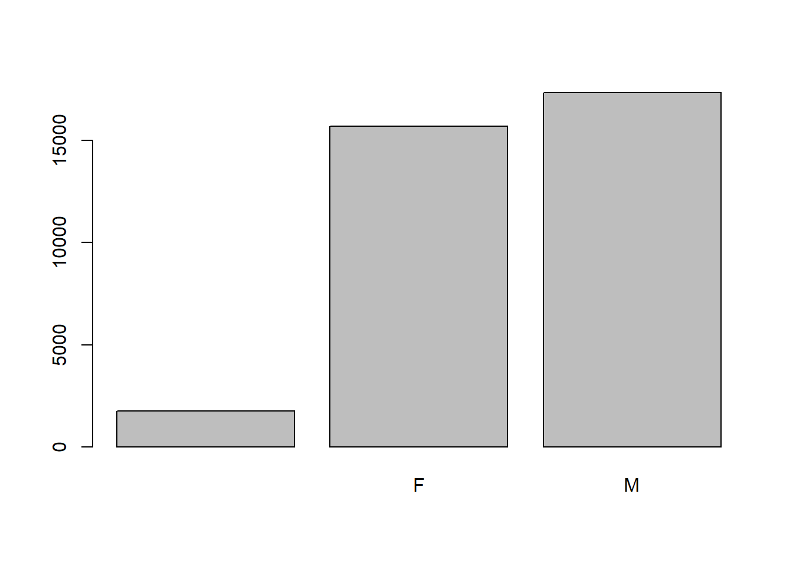
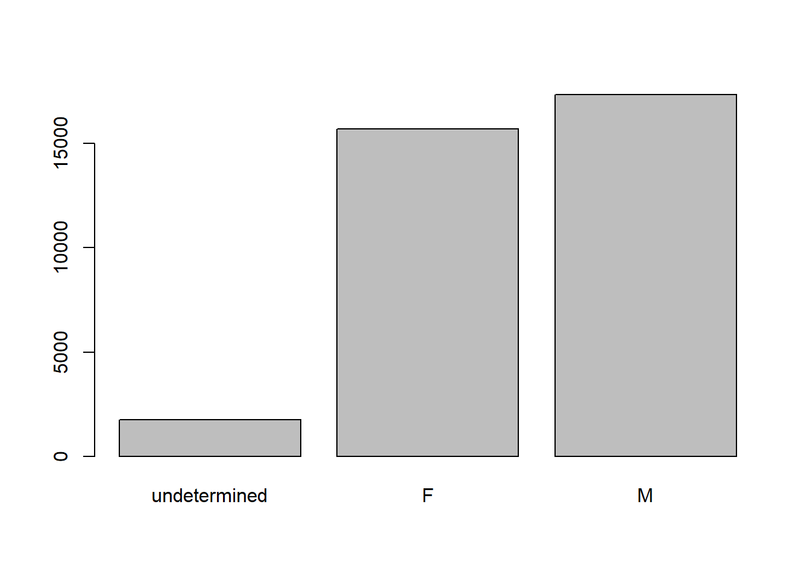

Kia ora
– last time we learned how to create objects and use comments and functions
– we also learned about a data type called a vector
– which you could think of as a bunch of values all in a line
– in this session we are going to learn about data frames, which are another data type
– kind of like R’s version of an excel spreadsheet
– Start up R studio, red sticky if any issues
– Link to class etherpad is up on page
– In it is the link to today’s lesson if you want to revisit it
– Feel free to leave feedback in it: I get better at teaching based on feedback
– I’ll also put all the code I write today in the etherpad so I think you’ll get most out of following along and trying to do the code rather than taking notes
Specific Learning Objectives
- You’ll be learning about data frames, how to pull a comma-delimited-file (an csv file) from your computer into R to create a data frame, and how to figure out what is in the data frame.
- We’ll also be talking a lot about something called a factor, how to convert between strings and factors, and how to handle strings and factors
- We’ll finish up with how to format dates.
STICKIES
# We are going to use the R function `download.file()` to download the CSV file
# download.file("where are we downloading from?", "what do we want to call the downloaded file?")
download.file("https://ndownloader.figshare.com/files/2292169",
"data/portal_data_joined.csv")This is naming the data “portal_data_joined.csv,” and adding it to a preexisting folder named “data.”
Problems: if you don’t have a folder called data you will get an error:
error in download.file cannot open destfile reason ‘no such file or directory’
We now have the data on our computer, but no we need to get it into R
#we use `read.csv()` to load our object into memory as a `data.frame`.
surveys <- read.csv("data/portal_data_joined.csv")This statement doesn’t produce any output because, as you might recall, assignments don’t display anything. We could put brackets about it….
#we use `read.csv()` to load our object into memory as a `data.frame`.
(surveys <- read.csv("data/portal_data_joined.csv"))
# Or we check that our data has been loaded by typing its name
surveysPhew boy that is a lot of output.
# To look at just the first 6 lines of this data frame
head(surveys)#> record_id month day year plot_id species_id sex hindfoot_length weight
#> 1 1 7 16 1977 2 NL M 32 NA
#> 2 72 8 19 1977 2 NL M 31 NA
#> 3 224 9 13 1977 2 NL NA NA
#> 4 266 10 16 1977 2 NL NA NA
#> 5 349 11 12 1977 2 NL NA NA
#> 6 363 11 12 1977 2 NL NA NA
#> genus species taxa plot_type
#> 1 Neotoma albigula Rodent Control
#> 2 Neotoma albigula Rodent Control
#> 3 Neotoma albigula Rodent Control
#> 4 Neotoma albigula Rodent Control
#> 5 Neotoma albigula Rodent Control
#> 6 Neotoma albigula Rodent Control# Try also
View(surveys)view is handy because you can sort things
STICKIES
So what is actually in this data set?
We are studying the species and weight of animals caught in plots in our study
Each row holds information for a single animal, and the columns represent:
| Column | Description |
|---|---|
| record_id | Unique id for the observation |
| month | month of observation |
| day | day of observation |
| year | year of observation |
| plot_id | ID of a particular plot |
| species_id | 2-letter code |
| sex | sex of animal (“M”, “F”) |
| hindfoot_length | length of the hindfoot in mm |
| weight | weight of the animal in grams |
| genus | genus of animal |
| species | species of animal |
| taxon | e.g. Rodent, Reptile, Bird, Rabbit |
| plot_type | type of plot |
# A few notes on data input...
# Fields delimited by commas
read.csv()
# However in some countries, "," is the decimal point and ; separates columns
read.csv2()
# There is also the following for tab separated data files
read.delim()
# Or if you have other characters delimiting your fields
read.table()All of these functions are actually wrapper functions for read.table
# Therefore, another way we could have loaded our data was:
`surveys <- read.table(file="data/portal_data_joined.csv", sep=",", header=TRUE)`.The header argument has to be set to TRUE to be able to read the headers as the default for the header option is FALSE.
STICKIES
A data frame is a table where the columns are vectors that all have the same length.
Because columns are vectors, each column must contain a single type of data (e.g., characters, integers, factors).
We can see this in our data by:
# str() will show the type of daa for each of our column vectors
str(surveys)Data frames are most commonly they are generated by read.table() or other similar function and are the de facto data structure for most tabular data, and useful for statistics and plotting.
Guys - that’s 2 out of our 8 learning objectives down
Being able to describe what a data frame is
Loading data in from a *csv into a data frame.
Nice work!
STICKIES
data.frame ObjectsOK, now we are going to go over some ways to check the content/structure of the data
### Looking at size ###
# dim() gives a vector with the number of rows in the first element
# and the number of columns as the second element. dim = dimensions
dim(surveys)
# number of rows
nrow(surveys)
# number of columns
ncol(surveys)
### Looking at the content ###
# Show the first 6 rows
head(surveys)
# Show the last 6 rows
tail(surveys)
### Looking at names ####
# Returns column names
names(surveys)
# Synonym - for data.frame
colnames(surveys)
# Return row names
rownames(surveys)
### Summary ###
# Structure of object and class, length and content of each column
str(surveys)
# summary statistics for each column
summary(surveys)STICKIES
Five minutes
#Based on the output of `str(surveys)`, can you answer the following questions?
# What is the class of the object `surveys`?
# How many rows and how many columns are in this object?
# How many species have been recorded during these surveys?str(surveys)#> 'data.frame': 34786 obs. of 13 variables:
#> $ record_id : int 1 72 224 266 349 363 435 506 588 661 ...
#> $ month : int 7 8 9 10 11 11 12 1 2 3 ...
#> $ day : int 16 19 13 16 12 12 10 8 18 11 ...
#> $ year : int 1977 1977 1977 1977 1977 1977 1977 1978 1978 1978 ...
#> $ plot_id : int 2 2 2 2 2 2 2 2 2 2 ...
#> $ species_id : Factor w/ 48 levels "AB","AH","AS",..: 16 16 16 16 16 16 16 16 16 16 ...
#> $ sex : Factor w/ 3 levels "","F","M": 3 3 1 1 1 1 1 1 3 1 ...
#> $ hindfoot_length: int 32 31 NA NA NA NA NA NA NA NA ...
#> $ weight : int NA NA NA NA NA NA NA NA 218 NA ...
#> $ genus : Factor w/ 26 levels "Ammodramus","Ammospermophilus",..: 13 13 13 13 13 13 13 13 13 13 ...
#> $ species : Factor w/ 40 levels "albigula","audubonii",..: 1 1 1 1 1 1 1 1 1 1 ...
#> $ taxa : Factor w/ 4 levels "Bird","Rabbit",..: 4 4 4 4 4 4 4 4 4 4 ...
#> $ plot_type : Factor w/ 5 levels "Control","Long-term Krat Exclosure",..: 1 1 1 1 1 1 1 1 1 1 ...# class: data frame
# how many rows: 34786, how many columns: 13
# how many species: 48And boom! That’s our 3rd out of eight learning objectives down:
Because now we now know how to summarize the contents of a data frame
STICKIES
Because a data frame has 2 dimensions we need to specify the “coordinates” we want from it. However, note that different ways of specifying these coordinates lead to results with different classes.
# When doing coordinates: row numbers come first, followed by column numbers.
# first element in the first column of the data frame (as a vector)
surveys[1, 1]
# first element in the 6th column (as a vector)
surveys[1, 6]
# first column of the data frame (as a vector)
surveys[, 1]
# first column of the data frame (as a data.frame)
surveys[1]
# `:` is a special function that creates numeric vectors of integers
# e.g. `1:3` increasing, and `3:1` decreasing
# e.g. to get first three elements in the 7th column (as a vector)
surveys[1:3, 7]
# the 3rd row of the data frame (as a data.frame)
surveys[3, ]
# equivalent to head_surveys <- head(surveys)
head_surveys <- surveys[1:6, ] # You can also exclude certain indices of a data frame using the "`-`" sign:
surveys[, -1] # The whole data frame, except the first column
surveys[-c(7:34786), ] # Equivalent to head(surveys)Data frames can be subset by calling indices (as shown previously), but also by calling their column names directly:
surveys["species_id"] # Result is a data.frame
surveys[, "species_id"] # Result is a vector
surveys[["species_id"]] # Result is a vector
surveys$species_id # Result is a vectorIn RStudio, you can use the autocompletion feature to get the full and correct names of the columns.
STICKIES
Five minutes
# 1. Create a `data.frame` (`surveys_200`) containing only the data in
# row 200 of the `surveys` dataset.
# 2. Notice how `nrow()` gave you the number of rows in a `data.frame`?
# Use that number to pull out just that last row in the data frame.
# Compare that with what you see as the last row using `tail()` to make sure it's meeting expectations.
# Pull out that last row using `nrow()` instead of the row number.
# Create a new data frame (`surveys_last`) from that last row.
# 3. Use `nrow()` to extract the row that is in the middle of the data
# frame. Store the content of this row in an object named `surveys_middle`.
# 4. Combine `nrow()` with the `-` notation above to reproduce the behavior of
# `head(surveys)`, keeping just the first through 6th rows of the surveys
# dataset.## 1.
surveys_200 <- surveys[200, ]
## 2.
# Saving `n_rows` to improve readability and reduce duplication
n_rows <- nrow(surveys)
surveys_last <- surveys[n_rows, ]
## 3.
surveys_middle <- surveys[n_rows / 2, ]
## 4.
surveys_head <- surveys[-(7:n_rows), ]STICKIES
Columns consist of different data types, including factors
Factors represent categories of data. This allows R to store the data as integers tied to these categories.
While they LOOK like character vectors, they are actually treated as integer vectors by R which can be kind of tricky
Once created, factors can only contain a pre-defined set of values, known as levels. This is kind of like our spreadsheet QC section with the drop down options for what we allowed in a cell
# By default, R always sorts levels in alphabetical order e.g.
sex <- factor(c("male", "female", "female", "male"))R will assign 1 to the level "female" and 2 to the level "male" (because f comes before m, even though the first element in this vector is "male").
# Looking at order of levels
levels(sex)
# How any levels do I have?
nlevels(sex)Sometimes, you want to change the order of the factors because that makes more sense e.g., “low”, “medium”, “high” it improves your visualization, or it is required by a particular type of analysis. Here, one way to reorder our levels in the sex vector would be:
# How to change the order of the factors
sex # current order#> [1] male female female male
#> Levels: female malesex <- factor(sex, levels = c("male", "female"))
sex # after re-ordering#> [1] male female female male
#> Levels: male femaleEven though in R’s memory, these factors are represented by integers (1 and 2) they are more informative because we know 1 is female and 2 is male.
STICKIES
Converting factors
# If you need to convert a factor to a character vector, you use `as.character(x)`.
as.character(sex)Converting factors where the levels appear as numbers (such as concentration levels, or years) to a numeric vector is a little trickier.
year_fct <- factor(c(1990, 1983, 1977, 1998, 1990))
year_fct
# The `as.numeric()` function returns the index values of the factor, not its levels,
# so it will result in an entirely new (and unwanted in this case) set of numbers.
as.numeric(year_fct) # Wrong! And there is no warning...
as.numeric(as.character(year_fct)) # Works...
as.numeric(levels(year_fct))[year_fct] # The recommended way.
# In the `levels()` approach, three important steps occur:
#1. We obtain all the factor levels using `levels(year_fct)`
#2. We convert these levels to numeric values using `as.numeric(levels(year_fct))`
#3. We then access these numeric values using the underlying integers of the
# vector `year_fct` inside the square bracketsSTICKIES
# When your data is stored as a factor, you can use the `plot()` function to get a
# quick glance at it
## bar plot of the number of females and males captured during the experiment:
plot(surveys$sex)
In addition to males and females, there are about 1700 individuals for which the sex information hasn’t been recorded and we don’t know if this information is missing or undetermined.
# Pulling out the data on sex and work with that data, so we're not modifying the
# original data frame:
sex <- surveys$sex
head(sex)#> [1] M M
#> Levels: F Mlevels(sex)#> [1] "" "F" "M"levels(sex)[1] <- "undetermined"
levels(sex)#> [1] "undetermined" "F" "M"head(sex)#> [1] M M undetermined undetermined undetermined
#> [6] undetermined
#> Levels: undetermined F Mplot(sex)
# Now we have labels for our "undetermined" columnsSTICKIES
Folks! That’s another three objectives we’ve knocked off! We now know how to: - Describe what a factor is. - Convert between strings and factors. - Reorder and rename factors.
Five minutes
# Rename "F" and "M" to "female" and "male" respectively.
# Now that we have renamed the factor level to "undetermined", can you recreate the
# barplot such that "undetermined" is last (after "male")?levels(sex)[2:3] <- c("female", "male")
sex <- factor(sex, levels = c("female", "male", "undetermined"))
plot(sex)STICKIES
stringsAsFactors=FALSEBy default, when making a data frame, columns that contain characters (i.e. text) are coerced (= converted) into factors.
You may (I would say often) want to keep these columns as character. To do so, in read.csv() and read.table() there is an optionalargument called stringsAsFactors which can be set to FALSE.
## Compare the difference between our data read as `factor` vs `character`.
surveys <- read.csv("data/portal_data_joined.csv", stringsAsFactors = TRUE)
str(surveys)
surveys <- read.csv("data/portal_data_joined.csv", stringsAsFactors = FALSE)
str(surveys)
# If we decide we DO want factors, we can convert the column into a factor
surveys$plot_type <- factor(surveys$plot_type)STICKIES
And boom, second to last learning objective for this lesson covered! We now know how character strings are handled in a data frame.
FIVE MINUTES
# 1. We have seen how data frames are created when using `read.csv()`, but
# they can also be created by hand with the `data.frame()` function. There are
# a few mistakes in this hand-crafted `data.frame`. Can you spot and fix them?
# Don't hesitate to experiment!
animal_data <- data.frame(animal = c(dog, cat, sea cucumber, sea urchin),feel = c("furry", "squishy", "spiny"),weight = c(45, 8 1.1, 0.8))
#2. Can you predict the class for each of the columns in the following example?
country_climate <- data.frame(country = c("Canada", "Panama", "South Africa", "Australia"),climate = c("cold", "hot", "temperate", "hot/temperate"),temperature = c(10, 30, 18, "15"),northern_hemisphere = c(TRUE, TRUE, FALSE, "FALSE"),has_kangaroo = c(FALSE, FALSE, FALSE, 1))
#Check your guesses using
str(country_climate)
#Are they what you expected? Why? Why not?
# What would have been different if we had added `stringsAsFactors = FALSE` when creating the data frame?
# What would you need to change to ensure that each column had the accurate data type?ANSWERS
# 1
# missing quotations around the names of the animals
# missing one entry in the "feel" column (probably for one of the furry animals)
# missing one comma in the weight column
# 2
# `country`, `climate`, `temperature`, and `northern_hemisphere` are factors; `has_kangaroo` is numeric using `stringsAsFactors = FALSE` would have made them character instead of factors
# removing the quotes in temperature and northern_hemisphere and replacing 1 by TRUE in the `has_kangaroo` column would give what was probably intendedThe automatic conversion of data type is sometimes a blessing, sometimes an annoyance. Be aware that it exists, learn the rules, and double check that data you import in R are of the correct type within your data frame. If not, use it to your advantage to detect mistakes that might have been introduced during data entry (a letter in a column that should only contain numbers for instance).
Learn more in this RStudio tutorial
STICKIES
Anyone from America here?
Dates are one of the biggest pains to deal with. Not only are there different orders, days-months-years vs month-day-year, or even year-month-day, but dates are a mix of numbers and characters.
# Using `str()` we see our data frame has a separate column for day, month, and year, and that each contains integer values.
str(surveys)We are going to use the ymd() function from the package lubridate (which belongs to the tidyverse)
When you load the tidyverse (library(tidyverse)), most packages get loaded but lubridate is an optional extra
# library() checks out the package we want
library(lubridate)ymd() is a function from the lubridate package that takes a vector representing year, month, and day, and converts it to a Date vector. Date is a class of data recognized by R as being a date.
We could format our date any which way but, as a best practice, is a character vector formatted as “YYYY-MM-DD”.
# Creating a data vector
my_date <- ymd("2015-01-01")
str(my_date)#If we paste the year, month, and day separately - we get the same result
# sep indicates the character to use to separate each component
my_date <- ymd(paste("2015", "1", "1", sep = "-"))
str(my_date)Now we apply this function to the surveys dataset.
#Create a character vector from the `year`, `month`, and `day` columns of`surveys` using `paste()`:
paste(surveys$year, surveys$month, surveys$day, sep = "-")#Use this character vector can be used as the argument for `ymd()`:
ymd(paste(surveys$year, surveys$month, surveys$day, sep = "-"))#> Warning: 129 failed to parse.#We can add `Date` vector to `surveys` as a new column called `date`:
surveys$date <- ymd(paste(surveys$year, surveys$month, surveys$day, sep = "-"))#> Warning: 129 failed to parse.str(surveys) # notice the new column, with 'date' as the classLet’s make sure everything worked correctly.
# One way to inspect the new column is to use `summary()`:
summary(surveys$date)#> Min. 1st Qu. Median Mean 3rd Qu.
#> "1977-07-16" "1984-03-12" "1990-07-22" "1990-12-15" "1997-07-29"
#> Max. NA's
#> "2002-12-31" "129"Something went wrong: some dates have missing values. Let’s investigate where they are coming from.
– use formulas we’ve already seen for dealing with NAs
– to find the rows that are no bueno
# Finding records that have `NA` in our new column `date`.
is_missing_date <- is.na(surveys$date)
# Telling R what the date columns are in our dataset
date_columns <- c("year", "month", "day")
#extract the columns "year, "month", "day" from the spreadsheet for the records with missing data
missing_dates <- surveys[is_missing_date, date_columns]
# We will also use `head()` so we don't clutter the output:
head(missing_dates)#> year month day
#> 3144 2000 9 31
#> 3817 2000 4 31
#> 3818 2000 4 31
#> 3819 2000 4 31
#> 3820 2000 4 31
#> 3856 2000 9 31FIVE MINUTES
# Why did these dates fail to parse?
#If you had to use these data for your analyses, how would you deal with this situation?And that’s that lesson done folks! You’ve covered the last learnign objective for this lesson which is how to format dates
STICKIES/MINUTE CARDS
Page built on:
Data Carpentry,
2018. License. Contributing.
Questions? Feedback?
Please file
an issue on GitHub.
On
Twitter: @datacarpentry